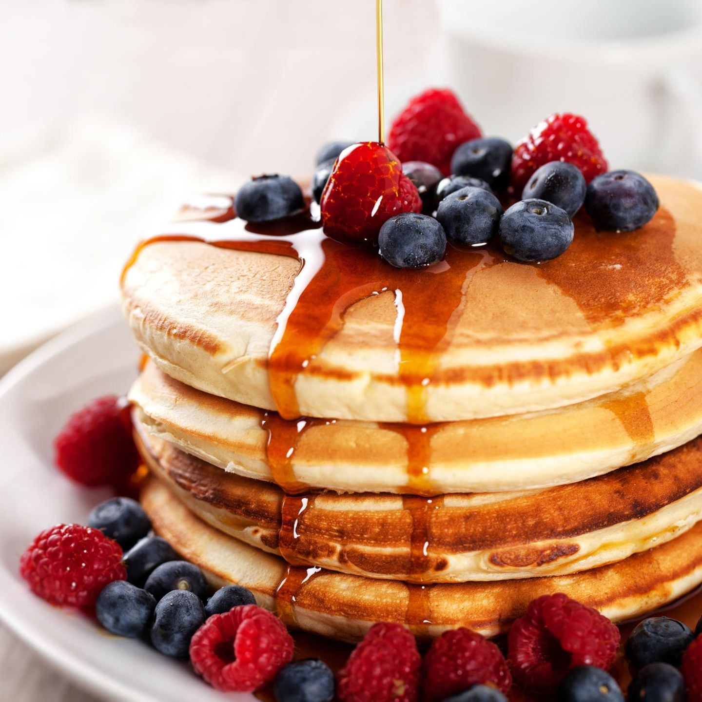

Pancakes
Here is my favorite recipe for pancakes. They are light, fluffy, and delicious. I hope you enjoy them!

Ingredients
- 1 cup all-purpose flour
- 2 tablespoons sugar
- 2 teaspoons baking powder
- 1/2 teaspoon salt
- 1 cup milk
- 2 tablespoons unsalted butter, melted
- 1 large egg
- 1 teaspoon vanilla extract
Preparation
- In a large bowl, whisk together the flour, sugar, baking powder, and salt.
- In a separate bowl, whisk together the milk, melted butter, egg, and vanilla extract.
- Pour the wet ingredients into the dry ingredients and stir until just combined.
- Heat a non-stick skillet or griddle over medium heat.
- Using a 1/4 cup measuring cup, pour the batter onto the skillet.
- Cook until bubbles form on the surface of the pancake, then flip and cook until golden brown.
- Repeat with the remaining batter.
- Serve warm with butter and maple syrup.
Back to home